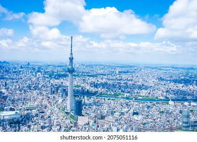
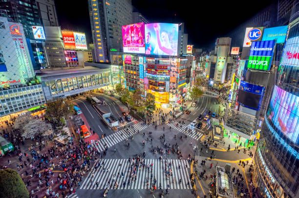

Tokyo, the bustling capital of Japan, is known for its mix of traditional culture and modern innovation. From the historic Asakusa district to the neon-lit streets of Shibuya, there's something for everyone in this incredible city.

Fig.1 - The iconic Tokyo Sky Tree in Tokyo.

Fig.2 - The bustling Shibuya Crossing at night.